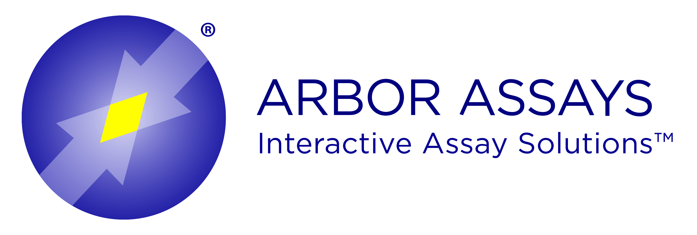
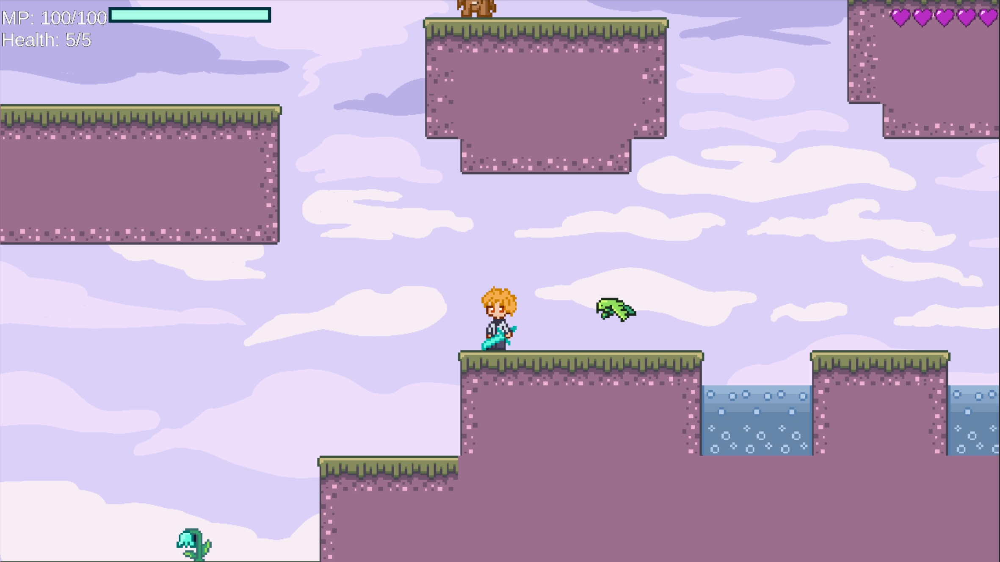

Hi! I'm Sabrina :)
(Super cool) UI/UX Designer & Researcher based in Ann Arbor, Michigan.
Who on EARTH is Sabrina Yu?

I'm a designer and artist who loves creative and exciting accessible interfaces, video games, and chickens. Ask me about what I'm working on! (and my chickens)
Wanna check out my work?

Arbor Assays UX Research and Design
A year-long collaboration with Arbor Assays, an Ann Arbor-based biopharmaceutical company that ships assay kits to researchers around the world. Our team of 4 UX researchers collected valuable data to make purchasing assay kits from their website easier and more accessible.

Kazamatsuri Quest Game Pitch
A collaborative project with a student from EECS 494 where our team helped improve their game called Kazamatsuri Quest. In studying and applying Games UX practices, we improved the UX, storyline, and level design to make a more complete and engaging game.

GreenThumb App Design and Pitch
A semester-long team project where we developed an app design and made a clickable prototype centered in sustainability initiatives in Ann Arbor. To improve the app's UI, we conducted usability tests and user research, iterating the prototype based on improved accessibility and user feedback.

Algorithms and Original Content on Social Media Case Study
A solo investigation into the effects of changing algorithms on popular social media platforms such as Instagram and Twitter on small creators. Insights was collected through conducting user interviews on small artists and content creators on how they gained interactions.

NOAA GLANSIS Website Redesign
A solo iterative project on redesigning the NOAA GLANSIS website, focusing heavily on improving accessibility and aesthetics for a variety of users. A big part of this design was improving the filter system for identifying specific species that are invasive to the Great Lakes watershed.

Genshin Impact Redesign Case Study
A group case study on the popular game Genshin Impact on what to improve in the game to increase user retention. By conducting a wide variety of surveys across the web, we gathered data on particular features that users wished was improved.